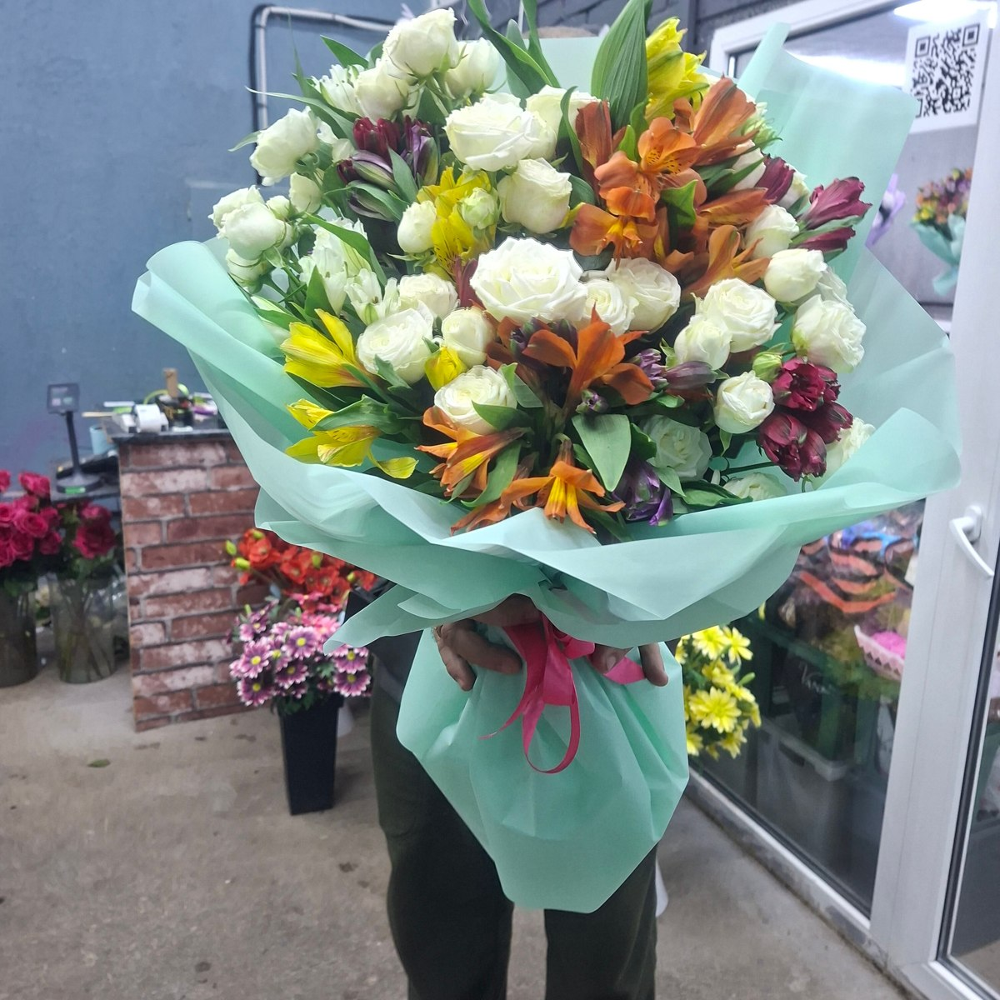
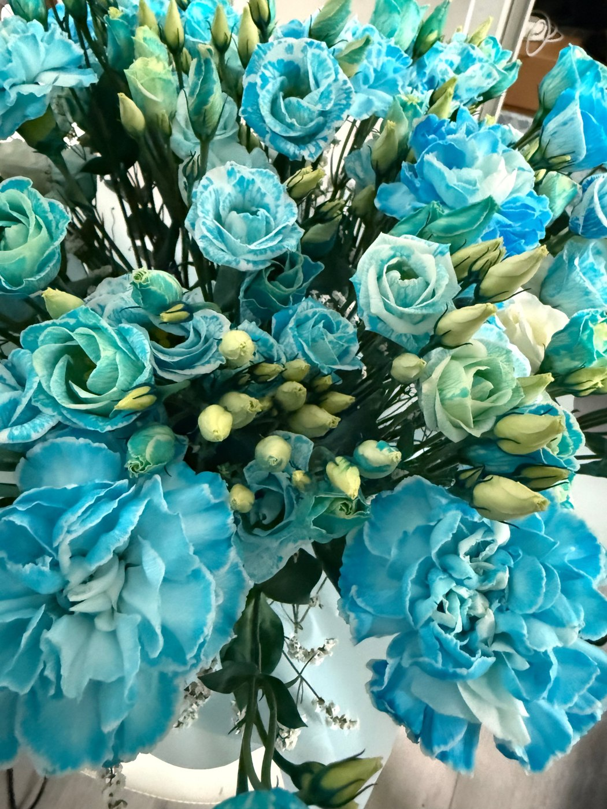
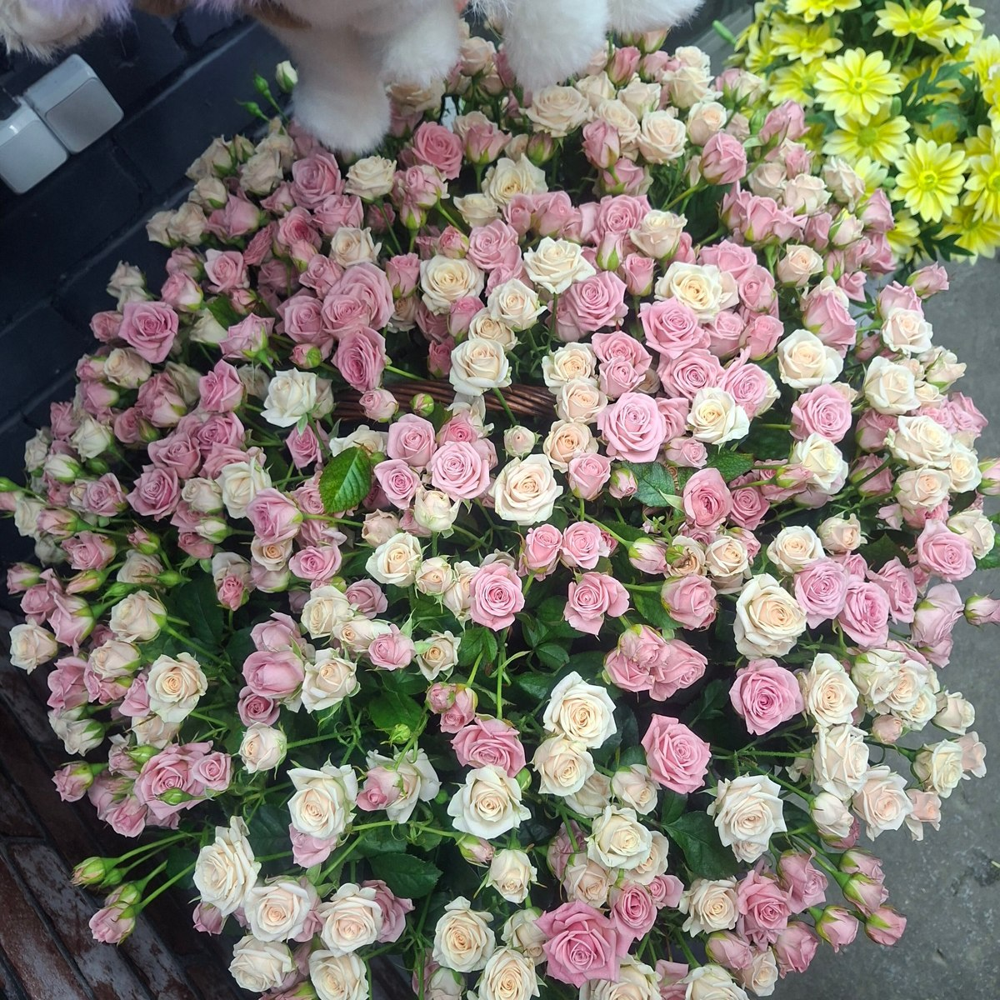
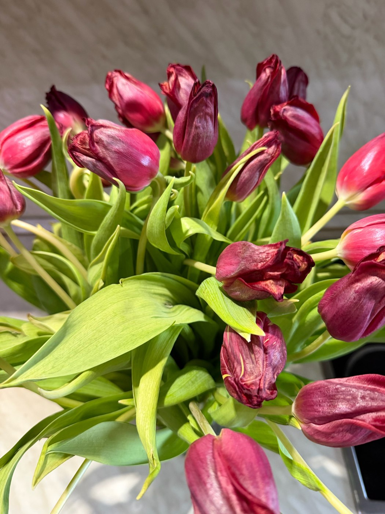

Доставка
Адрес, время и стоимость доставки согласуйте при заказе.
Стоимость уточняйтеБаза цветов · Рязань
Цветы и букеты на Московском шоссе, 63. Выберите настроение и обсудите состав с флористом.
Рязань, Московское ш., 63 · Ежедневно, 07:00–20:00




Выберите своё настроение
Подберём вариант под повод и бюджет. Свяжитесь с магазином, чтобы узнать актуальное предложение.
Опишите повод, любимые цветы и комфортный бюджет. Доступные варианты и итоговую стоимость магазин подскажет перед заказом.
Публичный прайс в карточке магазина не опубликован. Уточните цены и наличие по телефону.
Узнать стоимость ↗Цена относится только к указанному товару и его описанию. Если количество не указано, уточните единицу продажи у магазина. Сведения проверены 10.11.2026. Цены и ассортимент могут измениться. Прайс на Яндекс Картах ↗
Больше, чем цветы
Выберите, что нужно для вашего случая. Детали заказа и стоимость согласуйте с магазином.
Адрес, время и стоимость доставки согласуйте при заказе.
Стоимость уточняйтеДоговоритесь о составе заказа и удобном времени визита.
Стоимость уточняйтеОбсудите палитру, цветы и оформление вашего события.
Стоимость уточняйтеМатериалы, оформление и стоимость подскажут в магазине.
Стоимость уточняйтеДополните цветы личным пожеланием. Наличие и цену уточняйте.
Стоимость уточняйтеОбсудите доступные цветы и варианты композиции.
Стоимость уточняйтеБудем знакомы
Цветы и букеты на Московском шоссе, 63. Выберите настроение и обсудите состав с флористом.
Расскажите, кого хотите порадовать, какие оттенки вам нравятся и какой бюджет вы планируете. Состав, упаковку и время получения обсудите с сотрудниками.
Поближе к красоте
Загляните в магазин и найдите настроение для следующего заказа.
Фотографии из карточки магазина на Яндекс Картах. Это примеры работ и атмосферы; текущее наличие уточняйте.
Опыт покупателей
5,0 из 5 · 70 оценок на Яндекс Картах.
Выбранные отзывы с оценками 4 и 5 звёзд. Цитаты из оригиналов; полный текст — по ссылке.
«Девочки, спасибо большое, букет стоит уже полторы недели , несмотря на жару и погодные неурядицы. Качество, ассортимент и цены- просто восторг, ехала из самых Борок,…»
«Зашли случайно, нужен был букет который можно будет далеко отвезти. Спасибо огромное девочкам, и посоветовали и собрали красоту! Именинница была в восторге! Букет простоял 2…»
«Узнали об этом магазине от приятельницы, которая покупает там цветы в храм. Посетив магазин, были приятно удивлены! Большой выбор цветов, все цветы свежие, низкие цены,…»
«Впечатлена разнообразием и качеством цветов. Брала в детский сад цветы на праздник. Букеты выглядят роскошно! Флористы настоящие мастера своего дела. Буквально за полчаса мне всё…»
Перед заказом
Позвоните по указанному номеру и обсудите с магазином состав, бюджет и время получения. Заказ считается согласованным после подтверждения сотрудником.
Фотографии показывают примеры из карточки магазина. Сезонность и наличие могут влиять на состав. Попросите подтвердить цветы и упаковку перед заказом.
Цены взяты из опубликованного прайса на дату проверки. Итог зависит от выбранного состава, размера, упаковки и доставки. Подтвердите стоимость у магазина до оплаты.
Рязань, Московское ш., 63. Используйте кнопку «Построить маршрут» ниже. Режим работы: Ежедневно, 07:00–20:00.
До встречи
Рязань, Московское ш., 63
Ежедневно, 07:00–20:00